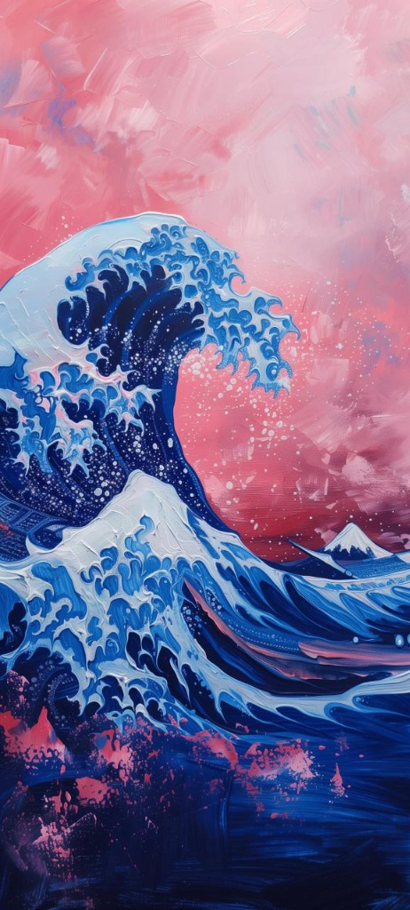

ثورة المحيط الأزرق في حضن سديم الساكورا والقرمز
كوريناي نامي (紅浪 - Kurenai Nami) هو نظام تصميم هجين يكسر رتابة الواجهات المسطحة؛ مستخرج بدقة من لوحة زيتية تجمع حركة موجة كاناغاوا العظمى بأسلوب الرسم المجسم الكثيف (Impasto)، متصالحةً مع جلال شفق جبل فوجي القرمزي والوردي.

// ركائز فلسفة التصميم (Design Pillars)
كيف نترجم لوحة فنية جامحة إلى لغة تصميم واجهات حديثة متماسكة وعالية الفعالية؟
1. التناغم الصدامي (Chromatic Clash)
الموازنة بين برودة كحلي الأعماق المظلمة (Prussian Navy & Cobalt) وتوهج السماء القرمزية وبتلات الساكورا (Sakura Pink). يمنح التطبيق حضوراً طاغياً دون التضحية براحة العين.
2. الملمس الزيتي النحتي (Tactile Impasto)
وداعاً للواجهات المسطحة الميتة. كل بطاقة وزر يحملان حافة سكين زيتية بارزة (Beveled Inset Highlights) تمنح المستخدم شعوراً فيزيائياً وكأنه يلمس لوحة قماشية زيتية محفورة باليد.
3. رسوخ قمة فوجي (The Fuji Anchor)
مهما بلغت أمواج الحركة والرغوة ذروتها، تبقى بنية المحتوى والقوائم مستقرة وهادئة كالبركان النائم خلف الموج؛ مما يضمن أن تكون تجربة الاستخدام سهلة، واضحة، ولا تشتت الذهن.
// أطلس الألوان المستخرجة (Extracted Color DNA)
أنقر على أي بطاقة لون لنسخ كود الـ HEX مباشرة إلى حافظتك. ألوان نقية مأخوذة من ضربات ريشة اللوحة.
سماء الشفق والقرمز (Sky & Kurenai Spectrum)
أعماق المحيط ورغوة الأمواج (Ocean & Spume Spectrum)
التدرجات اللونية المعيارية المعتمدة (Signature Master Gradients)
// محاكي ملمس السكين الزيتي (Impasto Physics Engine)
تحكم حياً في سماكة طبقة الدهان الزيتي، وبروز حافة السكين، ولمعان الانعكاس النحتي على البطاقة مباشرة.
محددات الكثافة والسطوع الزيتي
box-shadow: inset 0 2.5px 1px rgba(255,255,255,0.65), inset 0 -2.5px 3px rgba(0,0,0,0.4);
انعكاس الضوء على حافة الزيت البارزة
لاحظ كيف تمنح حافة السكين البيضاء (Top Highlight) والظل المقعر بالأسفل (Bottom Gouge) عمقاً ثلاثي الأبعاد لا يضاهى.
// مختبر المكونات البرمجية (Component Architecture)
عناصر واجهة تفاعلية جاهزة للإنتاج، تجمع روح اللوحة بصرامة الاستخدام الحقيقي.
تطبيق عملي حي: لوحة مؤشرات مرصد المحيط والشفق (Live Dashboard Preview)
مرصد كاناغاوا والشفق القرمزي
LIVE TELEMETRYبيانات محاكاة حية لطاقة المد البحري وانكسار ضوء الساكورا
// الهندسة التيبوغرافية (Typography Matrix)
توازن خطي بين وقار الخط الكلاسيكي الحاد (Serif & Alexandria) ودقة البيانات الهندسية (Mono).
الأمواج التي لا تنكسر
Alexandria 900 / Playfair Display Bold
ضربات السكين الزيتية المتراكبة ليست مجرد لون، بل هي نحت في الزمن يمنح الضوء زوايا متعددة للانكسار على سطح الشاشة الرقمية.
JetBrains Mono 500
// تصدير رموز التصميم (Export Design Tokens)
انسخ حزمة الرموز مباشرة إلى مشروعك بصيغة CSS Variables أو Tailwind CSS أو JSON.